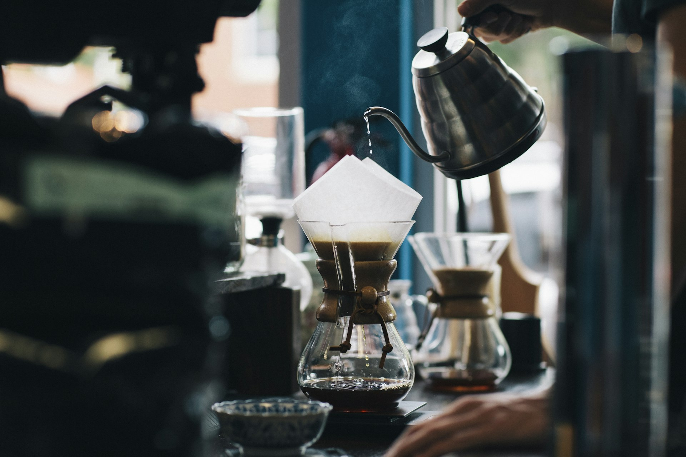
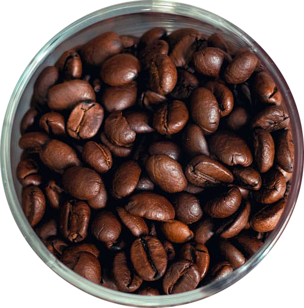
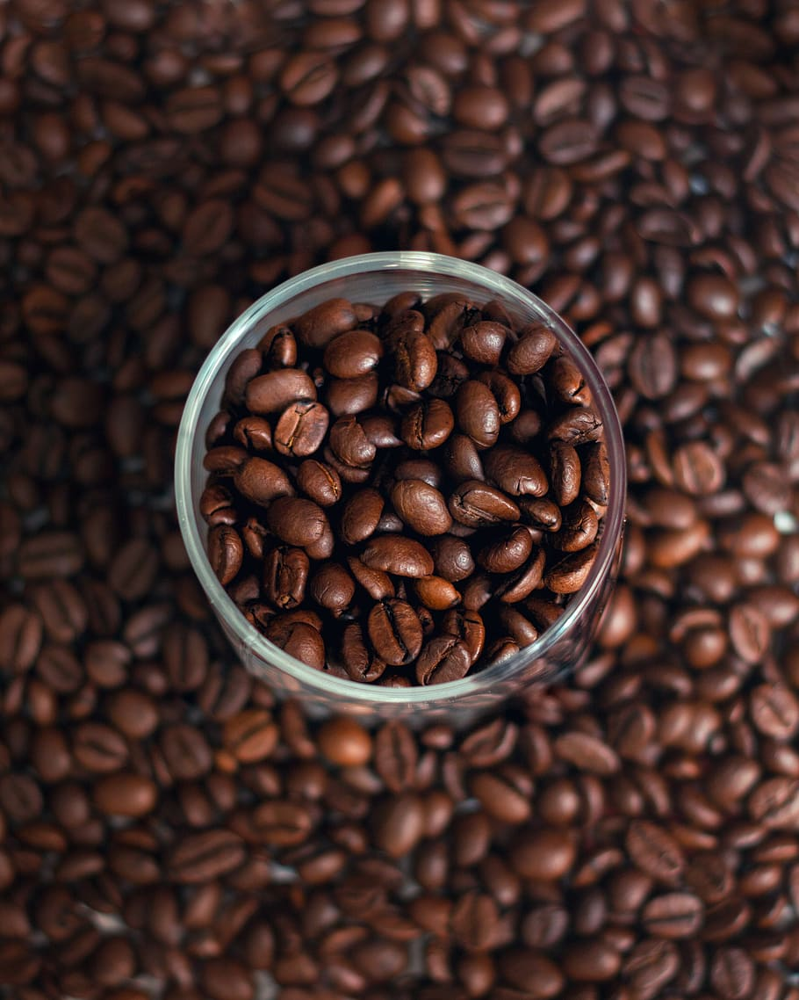
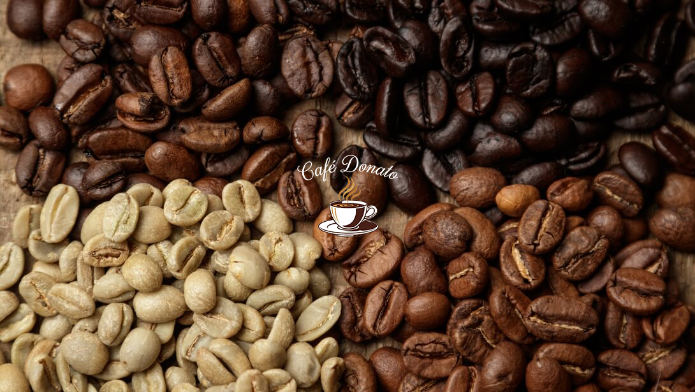
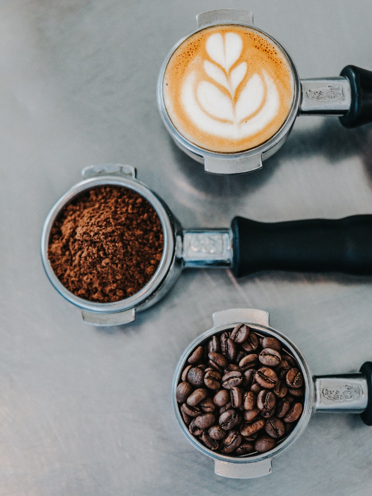

Nuestra
Historia
"Empezamos tostando granos en una cocina pequeña. Hoy seguimos con la misma obsesión por el detalle."
Café Donato nació del sueño de dos hermanos que compartían una pasión desmedida por el café de especialidad. Lo que comenzó como un proyecto artesanal en el barrio de Parque Patricios se convirtió en un espacio de referencia para quienes buscan algo más que una simple taza.
Creemos que detrás de cada café existe una cadena de personas que merecen ser reconocidas: el productor que cuida la tierra, el recolector que elige el momento justo de la cosecha, y el barista que transforma ese trabajo en una experiencia sensorial única.

Un sueño en
Parque Patricios
Todo empezó con un tostador de segunda mano, dos hermanos y una pregunta: ¿por qué el café que tomamos todos los días puede ser tan mucho mejor? Tomás y Lucía Donato dejaron sus trabajos, alquilaron un pequeño espacio y comenzaron a tostar de forma artesanal.
Los primeros clientes eran amigos y vecinos. El boca a boca hizo el resto. En menos de un año, la demanda superó ampliamente la capacidad del local original.

Abrir las puertas
al mundo
Con el local renovado y un equipo de baristas formados en las mejores escuelas del país, lanzamos nuestra barra al público. La propuesta era clara: café de especialidad accesible, sin pretensiones, pero con una calidad que habla por sí sola.
Incorporamos granos de origen único de Colombia, Etiopía y Perú. Cada bolsa lleva el nombre de la finca, la altitud de cultivo y las notas de cata. Transparencia total, de la planta a la taza.

Café de especialidad
a tu puerta
Hoy Café Donato llega a toda Argentina con su línea de granos y blends para preparar en casa. Desarrollamos guías de preparación, kits de iniciación y canales directos con los productores para garantizar frescura y trazabilidad en cada envío.
Seguimos siendo el mismo proyecto de barrio que empezó en 2018. Solo que ahora llegamos mucho más lejos.
Nuestros Valores
Origen Responsable
Trabajamos directamente con productores certificados que practican agricultura sostenible. Pagamos precios justos, muy por encima del mercado de commodities.
Tueste Artesanal
Cada lote se tuesta en pequeñas cantidades para garantizar frescura y precisión. Nuestros perfiles de tueste se ajustan al carácter único de cada origen.
Educación y Comunidad
Organizamos talleres de cata, cursos de preparación y visitas a nuestro laboratorio de tostado. Creemos que entender el café hace mejor cada taza.
Consistencia Total
Desde el primer lunes del año hasta el último viernes, el nivel de calidad no varía. Cada taza que sale de nuestra barra representa lo mejor que podemos hacer.

El Equipo
Tomás Donato
Co-fundador · Head RoasterCon más de 10 años de experiencia en cafés de especialidad, Tomás se encarga del desarrollo de perfiles de tueste y la selección de granos. Viaja dos veces al año a origen para conocer de primera mano a los productores.
Lucía Donato
Co-fundadora · Directora de ExperienciaFormada en diseño y gastronomía, Lucía dirige todo lo que sucede en el local: la atención, los talleres y la identidad visual del proyecto. Su obsesión es que cada cliente sienta que está en su propio living.
Martín Reyes
Head Barista · Campeón Nacional 2023Ganador del Campeonato Nacional de Barismo 2023, Martín es el alma de nuestra barra. Cada preparación en sus manos es un acto de precisión y cariño.